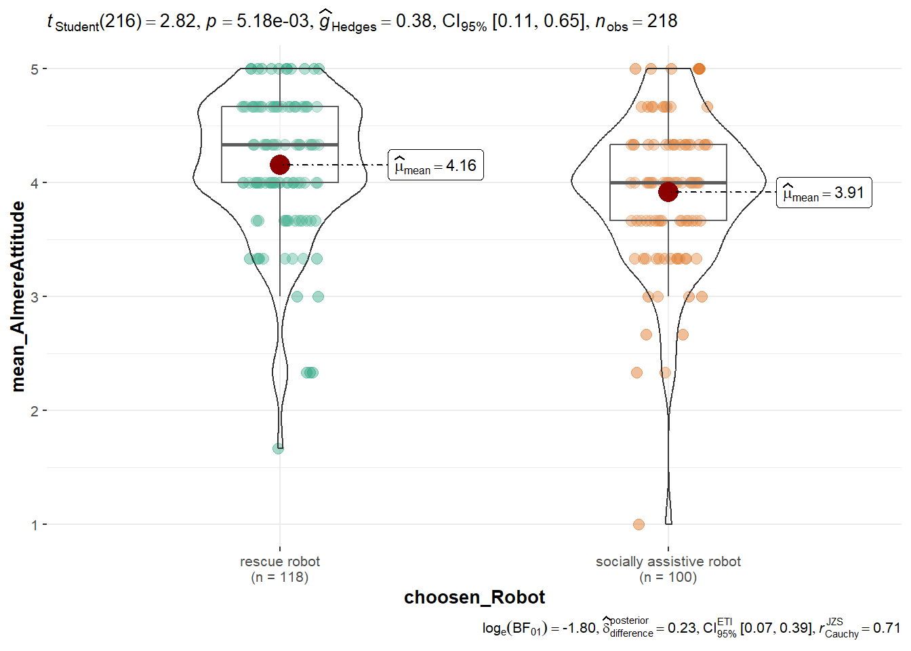

Parallel analysis suggests that the number of factors = 1 and the number of components = 1
AlmereAttitude
Number of components: 1
KMO criteria is to low (< .6) for:
Almere1att
mean KMO: 0.62
EFA factor loadings (1 factor solution):
Loadings:
MR1
Almere1att 0.999
Almere3att 0.683
Almere2att 0.572
MR1
SS loadings 1.791
Proportion Var 0.597
CFA summary and fit statistics:
lavaan 0.6.17 ended normally after 19 iterations
Estimator ML
Optimization method NLMINB
Number of model parameters 6
Number of observations 218
Model Test User Model:
Standard Scaled
Test Statistic 0.000 0.000
Degrees of freedom 0 0
Model Test Baseline Model:
Test statistic 155.330 149.227
Degrees of freedom 3 3
P-value 0.000 0.000
Scaling correction factor 1.041
User Model versus Baseline Model:
Comparative Fit Index (CFI) 1.000 1.000
Tucker-Lewis Index (TLI) 1.000 1.000
Robust Comparative Fit Index (CFI) NA
Robust Tucker-Lewis Index (TLI) NA
Loglikelihood and Information Criteria:
Loglikelihood user model (H0) -694.305 -694.305
Loglikelihood unrestricted model (H1) -694.305 -694.305
Akaike (AIC) 1400.610 1400.610
Bayesian (BIC) 1420.917 1420.917
Sample-size adjusted Bayesian (SABIC) 1401.904 1401.904
Root Mean Square Error of Approximation:
RMSEA 0.000 NA
90 Percent confidence interval - lower 0.000 NA
90 Percent confidence interval - upper 0.000 NA
P-value H_0: RMSEA <= 0.050 NA NA
P-value H_0: RMSEA >= 0.080 NA NA
Robust RMSEA 0.000
90 Percent confidence interval - lower 0.000
90 Percent confidence interval - upper 0.000
P-value H_0: Robust RMSEA <= 0.050 NA
P-value H_0: Robust RMSEA >= 0.080 NA
Standardized Root Mean Square Residual:
SRMR 0.000 0.000
Parameter Estimates:
Standard errors Sandwich
Information bread Observed
Observed information based on Hessian
Latent Variables:
Estimate Std.Err z-value P(>|z|) Std.lv Std.all
AlmereAttitude =~
Almere1att 1.000 0.732 0.940
Almere3att 0.577 0.111 5.183 0.000 0.423 0.607
Almere2att 0.681 0.117 5.816 0.000 0.498 0.552
Variances:
Estimate Std.Err z-value P(>|z|) Std.lv Std.all
.Almere1att 0.070 0.081 0.872 0.383 0.070 0.116
.Almere3att 0.305 0.052 5.913 0.000 0.305 0.631
.Almere2att 0.566 0.067 8.428 0.000 0.566 0.695
AlmereAttitude 0.536 0.106 5.038 0.000 1.000 1.000
CFA first 6 Modification Indices:
[1] lhs op rhs mi epc sepc.lv sepc.all sepc.nox
<0 Zeilen> (oder row.names mit Länge 0)
Parallel analysis suggests that the number of factors = 1 and the number of components = 1
LiWangAutonomy
Number of components: 1
EFA factor loadings (1 factor solution):
Loadings:
MR1
LiWang3autonomy 0.683
LiWang1autonomy 0.541
LiWang2autonomy 0.690
MR1
SS loadings 1.236
Proportion Var 0.412
CFA summary and fit statistics:
lavaan 0.6.17 ended normally after 24 iterations
Estimator ML
Optimization method NLMINB
Number of model parameters 6
Number of observations 218
Model Test User Model:
Standard Scaled
Test Statistic 0.000 0.000
Degrees of freedom 0 0
Model Test Baseline Model:
Test statistic 89.592 55.688
Degrees of freedom 3 3
P-value 0.000 0.000
Scaling correction factor 1.609
User Model versus Baseline Model:
Comparative Fit Index (CFI) 1.000 1.000
Tucker-Lewis Index (TLI) 1.000 1.000
Robust Comparative Fit Index (CFI) NA
Robust Tucker-Lewis Index (TLI) NA
Loglikelihood and Information Criteria:
Loglikelihood user model (H0) -1096.712 -1096.712
Loglikelihood unrestricted model (H1) -1096.712 -1096.712
Akaike (AIC) 2205.424 2205.424
Bayesian (BIC) 2225.731 2225.731
Sample-size adjusted Bayesian (SABIC) 2206.718 2206.718
Root Mean Square Error of Approximation:
RMSEA 0.000 NA
90 Percent confidence interval - lower 0.000 NA
90 Percent confidence interval - upper 0.000 NA
P-value H_0: RMSEA <= 0.050 NA NA
P-value H_0: RMSEA >= 0.080 NA NA
Robust RMSEA 0.000
90 Percent confidence interval - lower 0.000
90 Percent confidence interval - upper 0.000
P-value H_0: Robust RMSEA <= 0.050 NA
P-value H_0: Robust RMSEA >= 0.080 NA
Standardized Root Mean Square Residual:
SRMR 0.000 0.000
Parameter Estimates:
Standard errors Sandwich
Information bread Observed
Observed information based on Hessian
Latent Variables:
Estimate Std.Err z-value P(>|z|) Std.lv Std.all
LiWangAutonomy =~
LiWang3autonmy 1.000 0.862 0.664
LiWang1autonmy 0.848 0.186 4.565 0.000 0.731 0.559
LiWang2autonmy 1.177 0.280 4.205 0.000 1.014 0.647
Variances:
Estimate Std.Err z-value P(>|z|) Std.lv Std.all
.LiWang3autonmy 0.944 0.262 3.604 0.000 0.944 0.560
.LiWang1autonmy 1.177 0.192 6.132 0.000 1.177 0.688
.LiWang2autonmy 1.431 0.245 5.840 0.000 1.431 0.582
LiWangAutonomy 0.742 0.273 2.720 0.007 1.000 1.000
CFA first 6 Modification Indices:
[1] lhs op rhs mi epc sepc.lv sepc.all sepc.nox
<0 Zeilen> (oder row.names mit Länge 0)
vars n mean sd median trimmed mad min max range skew kurtosis se
X1 1 217 30.2 8.52 29 29.06 7.41 18 67 49 1.66 3.64 0.58
hist(questionnaireCAMs$socio_age)
table(questionnaireCAMs$socio_sex)
Female Male
75 143
table(questionnaireCAMs$socio_student)
No Yes
114 87
table(questionnaireCAMs$socio_employment)
Due to start a new job within the next month
4
Full-Time
85
Not in paid work (e.g. homemaker', 'retired or disabled)
7
Other
20
Part-Time
57
Unemployed (and job seeking)
19
## split by robotpsych::describe(socio_age ~ choosen_Robot, data = questionnaireCAMs)
Descriptive statistics by group
choosen_Robot: rescue robot
vars n mean sd median trimmed mad min max range skew kurtosis
socio_age 1 118 30.12 8.26 29 29.23 7.41 18 63 45 1.48 3.23
se
socio_age 0.76
------------------------------------------------------------
choosen_Robot: socially assistive robot
vars n mean sd median trimmed mad min max range skew kurtosis
socio_age 1 99 30.3 8.85 29 28.93 5.93 18 67 49 1.81 3.81
se
socio_age 0.89
[1] "Ich bin nicht sicher, ob das Konzept erläutert wurde (oder ob man as aktiv steuern konnte), das die Verbindungen auch nur in eine bestimme Richtung zeigen konnten."
[2] "Keine aber ich hatte Zeitmangel, habe mich dementsprechend unter Druck gefühlt."
[3] "Ich konnte bei den Verbindungen nur die Hemmung oder Verstärkung regeln, nicht aber die Richtung"
[4] "In der Hilfe stand bei der Beschreibung der Beziehung stand noch, dass man die Richtung der Beeinflussung mithilfe der Pfeie darstellen könne, dies war aber nicht möglich"
[5] "Manchmal hat das Verschieben der einzelnen Konzepte nicht so gut funktioniert"
[6] "Das Anklicken der Kästchen, war etwas mühsam, da manchmal nicht die gewünschte Funktion ausgeführt wurde (Kästchen wurden erstellt statt verschoben). Dies könnte aber natürlich auch an meinem PC liegen."
[7] "In der letzten Minute des Experiments habe ich den Bildschirm versehentlich aus dem Vollbildmodus entfernt."
[8] "Ich hatte ein paar Schwierigkeiten, die Aufgabe vollständig zu verstehen und die richtigen Entscheidungen zu treffen."
[9] "Ich glaube es sollten drei bereits vorgegebene Konzepte da sein, diese waren bei mir allerdings nicht vorhanden."
[10] "Mein Computer ist während der Umfrage abgestürzt"
[11] "Ab und zu wurde der Vollbildmodus verlassen, z.B. beim Laden der Mind-Map Applikation (aber nicht während der Bearbeitung)"
hist(questionnaire$feedCAM_repres)
summary(questionnaire$feedCAM_repres)
Min. 1st Qu. Median Mean 3rd Qu. Max.
2.000 6.000 6.000 6.014 7.000 7.000
psych::describe(x = questionnaire$feedCAM_repres)
vars n mean sd median trimmed mad min max range skew kurtosis se
X1 1 218 6.01 0.93 6 6.12 1.48 2 7 5 -1.25 2.28 0.06
Warning in min(x): kein nicht-fehlendes Argument für min; gebe Inf zurück
Warning in max(x): kein nicht-fehlendes Argument für max; gebe -Inf zurück

tmp <-t.test(mean_AlmereAttitude ~ choosen_Robot, data = questionnaireCAMs, var.equal =TRUE)psych::describe(mean_AlmereAttitude ~ choosen_Robot, data = questionnaireCAMs)
Descriptive statistics by group
choosen_Robot: rescue robot
vars n mean sd median trimmed mad min max range skew
mean_AlmereAttitude 1 118 4.16 0.62 4.33 4.21 0.49 1.67 5 3.33 -1.15
kurtosis se
mean_AlmereAttitude 2.07 0.06
------------------------------------------------------------
choosen_Robot: socially assistive robot
vars n mean sd median trimmed mad min max range skew
mean_AlmereAttitude 1 100 3.91 0.64 4 3.95 0.49 1 5 4 -1.1
kurtosis se
mean_AlmereAttitude 3.14 0.06
report::report(x = tmp)
Warning: Unable to retrieve data from htest object.
Returning an approximate effect size using t_to_d().
Effect sizes were labelled following Cohen's (1988) recommendations.
The Two Sample t-test testing the difference of mean_AlmereAttitude by
choosen_Robot (mean in group rescue robot = 4.16, mean in group socially
assistive robot = 3.91) suggests that the effect is positive, statistically
significant, and small (difference = 0.24, 95% CI [0.07, 0.41], t(216) = 2.82,
p = 0.005; Cohen's d = 0.38, 95% CI [0.11, 0.65])
# prepare data### add pre postnetworkIndicators_pre$timepoint <-"pre"networkIndicators_post$timepoint <-"post"### long data formatnetworkIndicators_long <-rbind(networkIndicators_pre, networkIndicators_post)### add IDnetworkIndicators_long$ID <-c(1:(nrow(networkIndicators_long) /2), 1:(nrow(networkIndicators_long) /2))### reformat variablenetworkIndicators_long$timepoint <-factor(networkIndicators_long$timepoint, levels =c("pre", "post"), ordered =FALSE)### add type robotnetworkIndicators_long$typeRobot <-ifelse(test =!is.na(networkIndicators_long$valence_micro_Rettungsroboter), yes ="rescue robots", no ="socially assistive robots")table(networkIndicators_long$typeRobot)
rescue robots socially assistive robots
234 202
table(questionnaireCAMs$choosen_Robot) *2
rescue robot socially assistive robot
236 200
### post - pre difference of robot -> average valence# ! all type of changesfit1 <- afex::aov_car(mean_valence_macro ~ timepoint*typeRobot +Error(ID / timepoint),data = networkIndicators_long)
Converting to factor: typeRobot
Contrasts set to contr.sum for the following variables: typeRobot
fit1a <- afex::aov_ez(id ="ID", dv ="mean_valence_macro",data = networkIndicators_long, between=c("typeRobot"), within=c("timepoint"))
Converting to factor: typeRobot
Contrasts set to contr.sum for the following variables: typeRobot
You have loaded plyr after dplyr - this is likely to cause problems.
If you need functions from both plyr and dplyr, please load plyr first, then dplyr:
library(plyr); library(dplyr)
### post - pre difference of robot -> average valence# ! only type of change B, Dtmp_ids <- questionnaireCAMs$PROLIFIC_PID[questionnaireCAMs$typeChange %in%c("B", "D")]networkIndicators_long_BD <- networkIndicators_long[str_remove_all(string = networkIndicators_long$participantCAM, pattern ="_pre$|_post$") %in% tmp_ids,]dim(networkIndicators_long); dim(networkIndicators_long_BD)
### post - pre difference of robot -> number of concepts# ! all type of changesfit1 <- afex::aov_car(num_nodes_macro ~ timepoint*typeRobot +Error(ID / timepoint),data = networkIndicators_long)
Converting to factor: typeRobot
Contrasts set to contr.sum for the following variables: typeRobot
fit1a <- afex::aov_ez(id ="ID", dv ="num_nodes_macro",data = networkIndicators_long, between=c("typeRobot"), within=c("timepoint"))
Converting to factor: typeRobot
Contrasts set to contr.sum for the following variables: typeRobot
### post - pre difference of robot -> number of concepts# ! only type of change B, Dfit1 <- afex::aov_car(num_nodes_macro ~ timepoint*typeRobot +Error(ID / timepoint),data = networkIndicators_long_BD)
Converting to factor: typeRobot
Contrasts set to contr.sum for the following variables: typeRobot
fit1a <- afex::aov_ez(id ="ID", dv ="num_nodes_macro",data = networkIndicators_long_BD, between=c("typeRobot"), within=c("timepoint"))
Converting to factor: typeRobot
Contrasts set to contr.sum for the following variables: typeRobot
Question: Ihre angepasste Mind-Map hatte eine durchschnittliche emotionale Bewertung von XXX, diese war im Vergleich zu ihrer anfangs gezeichneten Mind-Map (durchschnittliche emotionale Bewertung von XXX) XXX. Bitte erklären Sie, warum Sie diese XXX wahrgenommen haben:
[1] "In case of serious errors, how much do we distrust these robots."
[2] "Can be used to cause damage"
[3] "Based on the algorithm, the robot cannot properly recognize or ignore the dangers."
[4] "Unfair decisions made by algorithms"
[5] "Potential use for malicious purposes"
[6] "Not able to make complex ethical decisions like humans."
[7] "if there is a failure, it could be bad for people"
[8] "It is not easy to control data transfer in the robots. They can be hacked."
[9] "Depending on what exactly the robot is used for, in case of a malfunction, the person being cared for may be left to fend for themselves"
[10] "racist, ableist prejudices, but also too much emphasis on statistics"
[11] "Not everyone trusts robots."
[12] "You can't necessarily see how the robots decide/ it's not exactly clear why they decide as they do"
[13] "Software is always vulnerable"
[14] "Mistakes are inevitable, criteria by which the robot decides can be influenced by the prejudices of the programmer."
[15] "as a weapon or through other people for their personal benefit"
[16] "The robots could be hacked and cause damage in a conflict"
[17] "The social robots do not yet have a long tradition and hardly any empirical data"
[18] "Robots can be defective. In case of an error, a repair can be complex and take a long time."
[19] "Many treated individuals perhaps do not trust robots and do not accept them."
[20] "The robots could record confidential data. In the case of a hack/attack, this data could be stolen."
[21] "Possibly privacy issues due to camera and sound recordings"
[22] "Technology can always be misused. A robot in therapy, for example, when taken over by hackers, can cause a lot of damage."
[23] "Potentially, a robot may not make the right/essential decisions in an emergency."
[24] "Algorithms could be flawed and a human might not recognize them as such."
[25] "The technology could be misused"
[26] "That is possible"
[27] "There is the potential that robots can be hacked and then become dangerous."
[28] "Technical problems"
[29] "Only acts according to regulations"
[30] "Automatism or algorithm may not be appropriate for the situation that requires dialectical thinking."
[31] "The software of robots can be overwritten with malicious code"
[32] "What happens with the data, recordings, etc.?"
[33] "Robots and their behaviors can be influenced by the prejudices or assumptions of the developers in their work"
[34] "Although bad, people can also discriminate, which is why the argument is not very strong for me personally."
[35] "for detecting enemies"
[36] "e.g. with biased algorithms"
[37] "When programming the robot, priorities for rescue attempts must be set"
[38] "Malfunction may not be detected in time and errors in care can happen"
[39] "Which software is used that does not share personal data with third parties?"
[40] "Who is liable for gross mistakes in care?"
[41] "If the development is carried out by individual companies and the systems are closed source, they could potentially gain power over the area (especially from the software side). This could also possibly affect the transparency of the behavior of the robotic systems."
[42] "e.g. when systems are deliberately misused and the robot may potentially be capable of harming others."
[43] "Many people would probably have difficulties accepting robots."
[44] "Small mistakes in maintenance can mean serious consequences in use."
[45] "The AI could 'go nuts' and act completely wrong."
[46] "Could hack the robot to then control it differently. Kind of terrorist attack."
[47] "About the actions of rescue robots"
[48] "Depending on the patient or the medical staff, robots can be rejected (for various reasons)."
[49] "if the robot suffers a malfunction due to, for example, a bug, people are left to fend for themselves"
[50] "Racist robot"
[51] "To obtain a functional rescue robot, one would need a lot of time to optimize it."
[52] "technical manipulation of rescuer"
[53] "(Attack from outside)"
[54] "Using robots for spying, etc."
[55] "How does one prevent the robot from disclosing private information? Unlike a human assistant, whom one may or may not trust, the robot is opaque to the person in need of help."
[56] "who sees what the robots see?"
[57] "It is possible that due to the training model, people are discriminated against in certain situations, who also need to be saved."
[58] "Possibly abused by use in wars"
[59] "AI is often biased against certain groups of people due to training data."
[60] "Could also be used to actively cause damage"
[61] "They could be abused in war"
[62] "for war purposes or to prevent rescue purposes"
[63] "the people who rely on robots are also the people who are easy to influence and easy to exploit, special caution is required here."
[64] "The devices could be hacked and manipulated. She can be racist and cause more damage."
[65] "Fully autonomous machines need predefined actions for various situations, these are difficult to free from prejudices. For example, when it needs to be prioritized who should be saved first."
[66] "How does data protection work?"
[67] "Internally, or externally through, for example, hackers."
[68] "They may possibly be able to drive alone, but in case of doubt someone always has to intervene and be able to control the robot, because mistakes can be deadly"
[69] "possible"
[70] "Robots can be used for personal purposes"
[71] "A programming error can lead to a disaster"
[72] "Hackers could influence the robots"
[73] "I am not sure from the text how reliable such robots really are."
[74] "Rescue robots could make catastrophic decisions thanks to algorithms, which could endanger more people."
[75] "Rescue robots can also be misused for other services."
[76] "Cyber attack"
[77] "Depending on the interaction, there could be physical danger"
[78] "Use for malicious purposes"
[79] "Problematic, but if not written by AI, manageable"
[80] "How can one prevent rescue robots from falling into the wrong hands? Especially with the creation of maps, it is very problematic in terms of planning attacks."
[81] "what requirements? how are these checked?"
[82] "People can get into trouble if the robot doesn't work in dangerous situations"
[83] "The start with it will not be easy for the respective institutions"
[84] "No deviations from programming"
[85] "the algorithm could discriminate"
[86] "incorrect use of robots in war situations, for example"
[87] "How does a robot make decisions? Which people are saved first?"
[88] "Drones that have been modified to drop explosives on soldiers, for example. But also how they are used to film the dying or the suicide drones."
[89] "with affected people"
[90] "Possible structural disadvantage in AI-supported recognition of missing/injured persons"
[91] "Robots could be misused for other purposes"
[92] " Possibly fewer than people"
[93] "Who will be saved first? The grandma or the toddler?"
[94] "As always, people can use robots for terrible things, such as laying a bomb without anyone noticing."
[95] "Could discriminate in rescue operations based on gender, skin color, age or other external characteristics"
[96] "As was in the description, the possibility that new technologies will be misused in fights or war exists."
[97] "Can a robot make a decision to kill?"
[98] "Algorithms can discriminate"
[99] "Especially in the use of AI, it may eventually become uncontrollable to fully understand how and why a robot behaves in a certain way."
[100] "abusive use of robots for other purposes, such as in war"
[101] "Robots can be misused for the wrong purposes"
[102] "Can be hacked, or otherwise damaged, causing harm"
[103] "= use as a weapon"